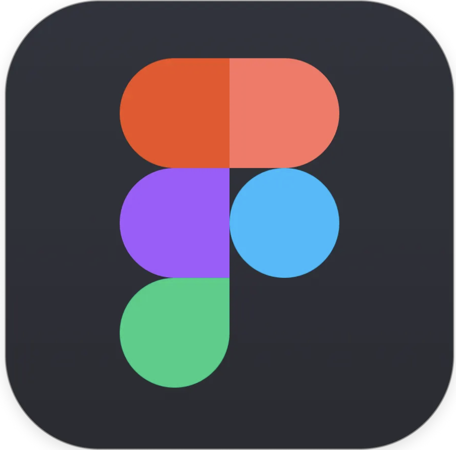

Skills

Experiences
Education
Design and develop websites and interactive Web applications based on standard Web technologies and software frameworks
ReDI School of
Digital Integration Copenhagen is a non-profit IT school for
women with refugee and migrant backgrounds, who want to
strengthen their digital skills in order to be included in
Danish workplaces and society.
Introduction
to JavaScript is a 12-weeks course aiming to teach the basic
concepts of programming. The course consisted of 36 teaching
hours as well as assignments, self-studying and project work.
During the course, I have been introduced to:
CV available upon request 😉